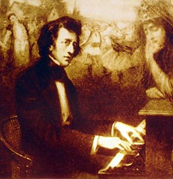

|  | Fryderyk Chopin was a Polish composer of the Romantic Era in European classical music. Chopin wrote exclusively for the piano, and his music is considered virtuosic while simultaneously being deeply expressive and personal. "Chopin was a genius of universal appeal. His music conquers the most diverse audiences. When the first notes of Chopin sound through the concert hall there is a happy sigh of recognition. All over the world men and women know his music. They love it. They are moved by it. Yet it is not 'Romantic music' in the Byronic sense. It does not tell stories or paint pictures. It is expressive and personal, but still a pure art. Even in this abstract atomic age, where emotion is not fashionable, Chopin endures. His music is the universal language of human communication. When I play Chopin I know I speak directly to the hearts of people!" There is no other music that touches me as much as Chopin's. This page contains my personal interpretation of his music, some interesting references, links to a few recordings of mine on the piano and may be regarded as a dedication page. |
The strength and uniqueness of Chopin's music lies in the piano. At any point while playing Chopin, the intimate relationship between the music and the piano is very apparent, and it almost seems that the music cannot be played on any other instrument.
One reason for this maybe the relative undecidedness in Chopin's music. Chopin himself never named his pieces more than just the general form and common names such as the 'Revolutionary' for the Op.10, No.12 Etude and 'Raindrop' for the Op.28, No.15 Prelude are clear misnomers. When examined further, not only a picture but even an emotion is hard to attach to most of Chopin's pieces. The best examples are found in his larger works such as the Ballade No. 1, where the pianist and the listener is left tranced with a myriad of emotions, none of them very specific. It is probably apt to say that grammar is often exhausted of expressions to describe the sound.
Such is the personal nature of Chopin's music. I can only guess that this quality of undecidedness would have required Chopin to be one with a particular instrument, and his fingers be a medium to share his deepest of feelings with an inanimate object.
When it comes to Romantic composers, I like to classify them into two broad categories: one quite absolutist, observing the world from an eagle's view and trying to reach the omniscient with their music. The other, moved by the simplest of earthly beauty, work hard to condense it in their notes. Chopin clearly falls into the latter set, as would Mendelssohn and Schumann (I will with some caution, also say Schubert). Beethoven will fall in the first category, as would Brahms.
As much as most composers defy this kind of bland classification, there is something strikingly contradictory between Beethoven's piano music and Chopin's. For example, in Beethoven's Sonata No. 21, 'Waldstein', the first movement is sublime in its form yet absolutely grand and detached. One can attribute this partly to the sonata form, which developed in the classical period; but it is little surprise why Beethoven wrote piano pieces mainly in this form. Another stark difference can be found in the use of long trills which Chopin almost never does. To me, a long trill on any instrument is indicative of the composer trying to throw the sound into absolutism; which Beethoven uses abundantly. Most believe that Chopin never saw Beethoven in his music, save for some tributes such as probably in the Fantasie Impromptu.
Both composers represent a different world view and both being favorites, its always interesting to learn and compare their music.
Chopin's primary contribution to the 'state-of-the-art' was to give a keyboard instrument such as the piano, the tone of a voice. Most of Chopin's music have a familiar melody highly reminiscent of a voice, particularly that of a woman's. There is generous use of the pedal is almost all pieces, which further emphasizes the need to create the 'sotto voce's or the 'smorzando's we so often find in his work.
Carnatic Music is a tradition of South India, where songs are composed primarily for the voice. Instruments if any are either used as accompaniments or transcribe songs meant for voice. Although the basis of the Carnatic tradition is to use the taalam and the raagam, not found in European Classical Music, some of Chopin's pieces that have a strong vocal component do resemble Carnatic songs. An example can found in Oothukkadu Venkatasubba Iyer's 'Asainthadum Mayil' written in the Simhendramadhyamam raagam. This raagam closely resembles the harmonic minor scale except for a different semitone in the fourth. The change in the fourth is critical in Chopin's Waltz in B minor, Op.69, No.2. When performed back to back, the similarities between these two pieces can be noted.
"Chopin's extemporary playing was bolder than his compositions, both in style and character, his actual pieces being mere distillations of his improvisations."
Although, Carnatic Music (unlike its North Indian counterparts, Hindustani Music and other forms such as the Qawwali and Ghazal), is based primarily on variations rather than improvisations, from a composers viewpoint, they mostly do constitute the same tenet. Interestingly, Chopin is often considered the first true nationalist composer, and maybe, my comparisons are just abstract over-generalizations of such philosophies!
Many greats have recorded Chopin, and some individual recordings stand out for most of them. In general I like to categorize recordings into quality of technique, tone and phrasing, each of them being equally important. My favorite interpreters in these aspects are:
Krystian Zimerman (Technique) [Barcarolle, Op.60]
Rafal Blechacz (Tone) [Polonaise, Op.53]
Garrick Ohlsson (Phrasing) [Concerto, Op.11]
Complete editions of Chopin's 246 odd pieces have been performed by Garrick Ohlsson and Vladimir Ashkenazy. Artur Rubinstein and Idil Biret have recorded most of Chopin's works. I personally recommend Ohlsson's recordings available on Hyperion (purchase on Amazon).
Sheet music of all of Chopin's works is available on the International Music Score Library Project. Although major competitions recommend the Ekier or Paderewski editions, Mikuli editions on IMSLP are comprehensive and available free; they should suffice for amateur pianists such as myself.
Some of my recordings on Youtube can be viewed here (to know more about my musical background, please see my Music Resume):